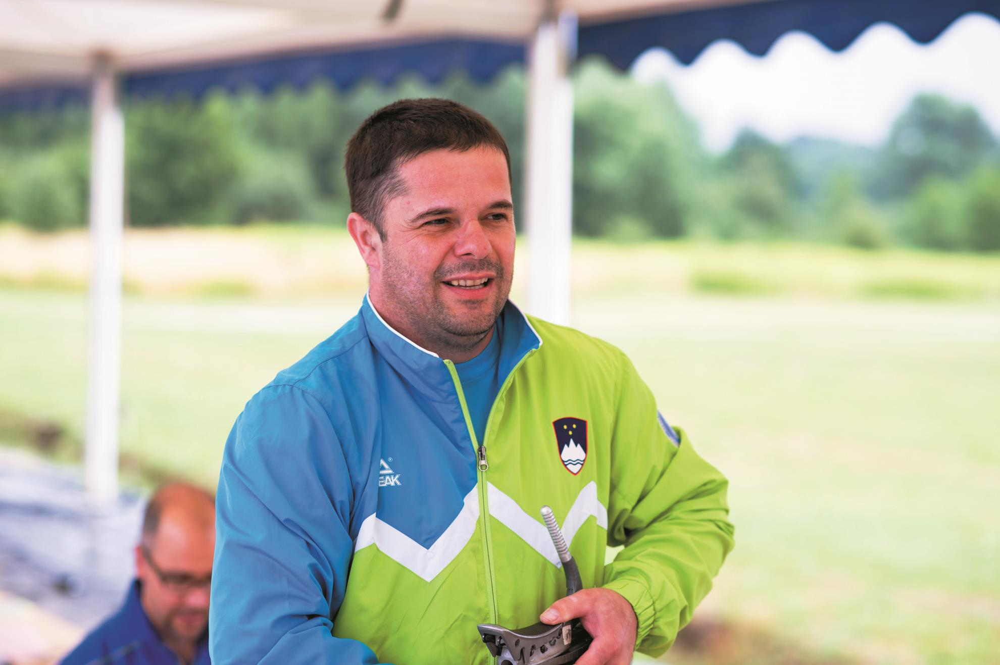

Elektronsko strelišče s 6 mesti se nahaja na Rakeku, v stavbi bivšega sodišča, kjer se zdaj nahajajo različna društva. V društvu imamo veliko vrhunskih tekmovalcev, ki dosegajo odlične rezultate s pomočjo kvalificiranih in izkušenih trenerjev. V društvu je tudi licenciran sodnik, kateri tekmovalce opozarjajo na spoštovanje pravil.
Zgodovina
Zgodovina društva se začne po letu 1950, ko so se trije mladi pobje iz Dolnjega jezera odločili pomeriti v streljanju. V lesnem podjetju BREST Cerknica, v katerem je bila zaposlena skoraj večina prebivalcev, so organizirali tekmovanje v Lesariadi, kjer je bil prisotno tudi tekmovanje v streljanju. Točnih zapisov iz katerih bi bilo razvidno, kdaj je to bilo ni. Prvotno strelišče je bilo montažno in, kar v samem podjetju, kasneje pa v prostorih
menze (zdajšnji bar Kekec). Delovali so pod nazivom STRELSKO DRUŠTVO BREST. Nato se je strelišče preselilo v športno dvorano in se po razpadu podjetja Brest preimenovalo v STRELSKO DRUŠTVO BREST CERKNICA in leta 2011 na Rakek, kjer danes deluje društvo pod imenom CERKNIŠKO DRUŠTVO STRELK IN STRELCEV, krajše CD-SIS-X (x pomeni muš, kar je v strelstvu 100% zadetek = 10,9).

Leta 1982 je vodenje strelske družine prevzel Damijan Kandare, nekoč tudi sam strelec in član državne strelske reprezentance, ki je pričel s sistematičnim in planiranim delom z mladimi. Njegovo delo je obrodilo sadove, saj so njegovi varovanci hitro začeli posegati po državnih naslovih tako z zračno puško, malokalibrskim orožjem, velikokalibrskem orožjem, samostrelom in trap puško.
Strelci so se udeleževali številnih tekmovanj od občinskih, republiških, državnih do mednarodnih in dosegali visoke uvrstitve. Strelci pa so se izkazali tudi kot organizatorji področnih in republiških tekmovanj.
S pridobitvijo 5 elektronskih tarč, katere je nabavila Občina Cerknica in eno društvo, so se pogoji dela in rezultati takoj izboljšali, kar se je pokazalo v številnih uspehih na tekmiovanjih.
Naši tekmovalci vsako leto na državnem prvenstvu in drugih tekmovanjih dosegajo odlične uvrstitve. Trenutno sta dva strelca in ena strelka, člani državne strelske reprezentance.